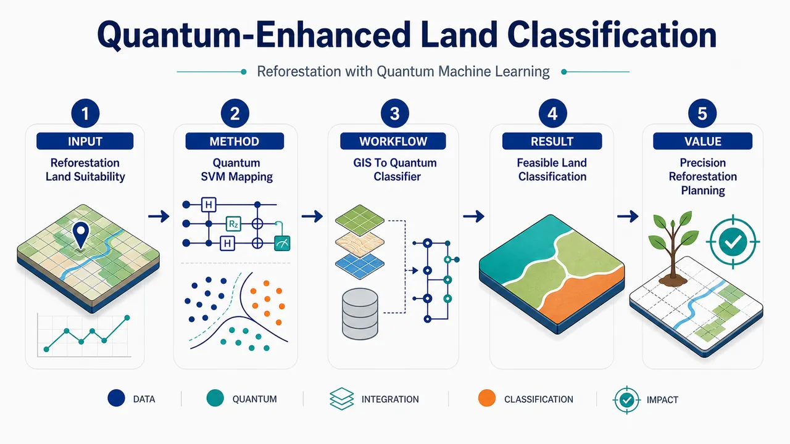
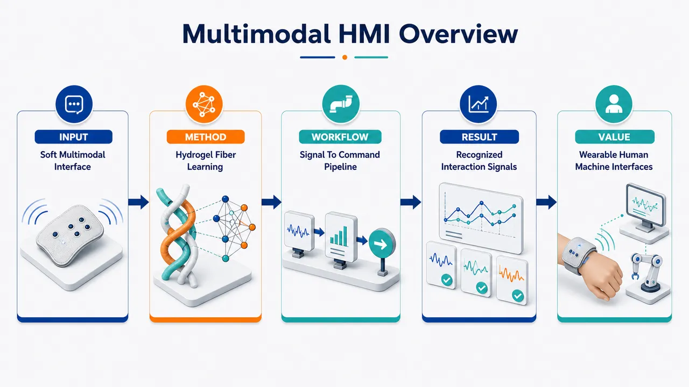
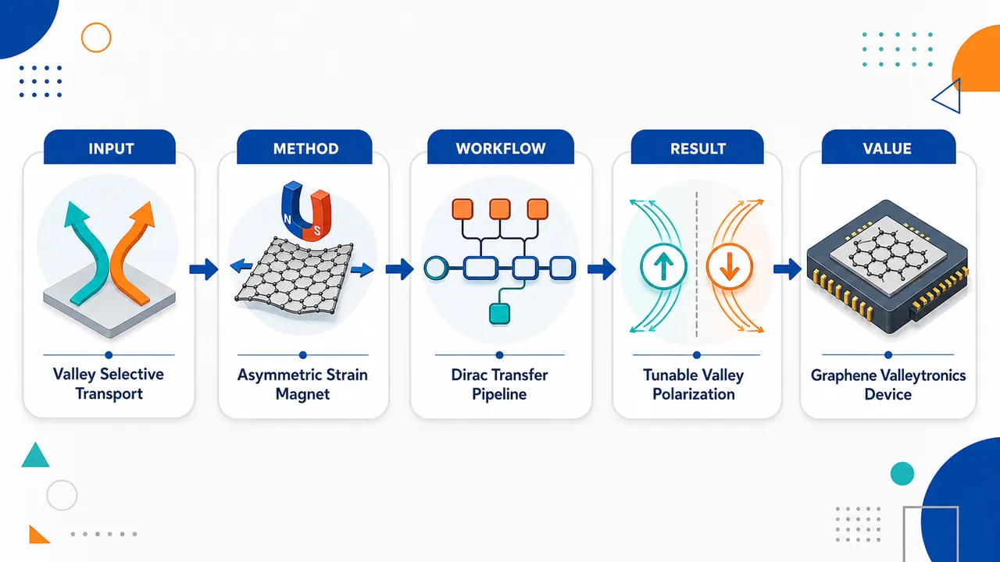
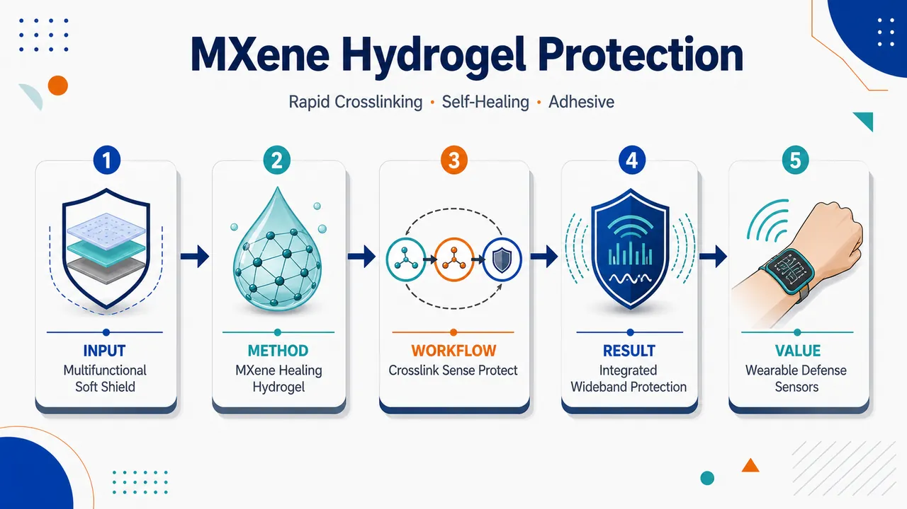
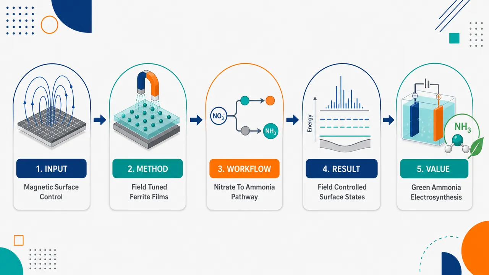
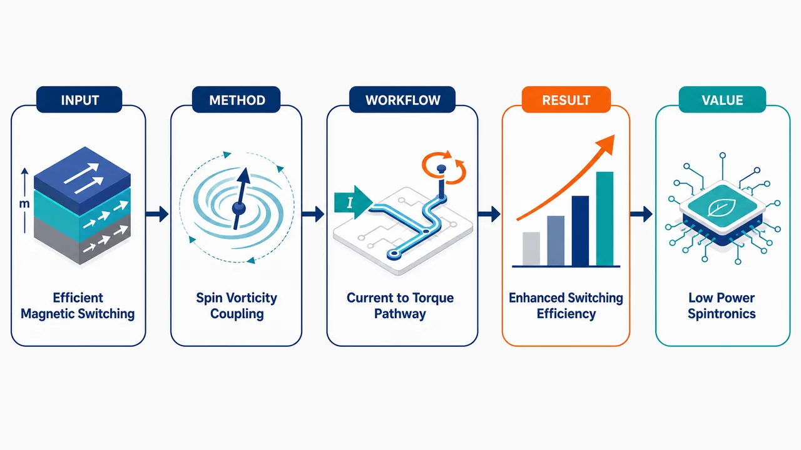

AI × Science 文献日报 2026/05/31
聚焦 AI × 物理 / 化学 / 材料交叉方向，自动过滤明显偏题的医学、教育与社会科学内容，并按主题重新排版，便于快速深读。
AI | 物理 | 化学 | 材料 | 交叉学科
原始候选 11 篇中，已剔除 0 篇明显偏离主线的内容，并从剩余 11 篇主线相关文献中精选 9 篇进入日报页，优先保留 AI × 物理 / 化学 / 材料交叉与关键计算方法工作。
核心关注（ML × ferro / 凝聚态）
4 篇今日条目没有出现 NbOI2、CrI3、CrSBr、BaTiO3 等典型铁电/二维磁体体系上的 equivariant GNN、MACE、NEP 或 DFT+U 数据驱动建模。ML 实质内容主要落在 GIS 特征输入 QSVM 的地表分类、以及水凝胶纤维多模态传感信号识别，尚未触及铁电畴、自旋哈密顿量或声子势能面的可学习表示。凝聚态机制进展集中在石墨烯非对称应变/铁磁条带诱导谷极化输运，以及轻金属/铁磁金属双层中的自旋涡度耦合增强 SOT 翻转。对 ML×ferro 研究者而言，更直接的切入点是把传递矩阵、Dirac 模型、SOT 开关动力学转成可微代理模型或主动学习数据源，而不是简单套用分类器。
-
01量子机器学习与GIS用于造林土地分类Quantum-Enhanced Land Classification for Reforestation using Quantum Machine Learning and GIS
📄 摘要：以孟买区域为对象，将GIS预处理的NDVI、降雨、坡度、土壤pH等卫星/地理指标输入QSVM，评估造林适宜性分类；摘要未给精度数值。
💡 亮点：QSVM结合GIS指标筛选孟买造林适宜地。
📐 方法要点：GIS 提取 NDVI、降雨、坡度、pH，输入 QSVM 做适地分类
🔗 相关工作关联：呼应遥感特征工程、核方法分类、量子核 SVM 与地学 ML
💡 对你方向的启示：可借鉴量子核对小样本异质特征的处理，但需严格基准对比经典 SVM
-
02双网络水凝胶纤维赋能多模态人机界面Multimodal Perception and Machine Learning‐Empowered Human Machine Interfaces With Double‐Network Hydrogel Fibers
📄 摘要：双网络水凝胶纤维用于多模态感知人机界面，结合机器学习解析传感信号；题录未给力学、电学或识别率等数值。
💡 亮点：水凝胶纤维与机器学习耦合多模态感知。
📐 方法要点：双网络水凝胶纤维采集多模态信号，ML 解码人机交互状态
🔗 相关工作关联：呼应柔性离子电子器件、可穿戴传感、时序信号分类与多模态融合
💡 对你方向的启示：凝聚态材料传感可把力电耦合响应转成监督学习数据流，需补充物理可解释特征
-
03非对称应变和铁磁调制诱导石墨烯谷极化输运Valley-polarized transport in graphene induced by asymmetric strain and ferromagnetic modulation
📄 摘要：基于狄拉克方程和传递矩阵，构建两个应变区加单个铁磁条带的石墨烯多区模型，计算K/K′谷电导；非对称应变与铁磁调制诱导谷极化输运。
💡 亮点：应变区加铁磁条带可选择性调控石墨烯谷电导。
📐 方法要点：Dirac 方程加传递矩阵求 K/K′ 电导，分析应变与铁磁调制
🔗 相关工作关联：呼应石墨烯谷电子学、赝磁场、铁磁势垒、Landauer 输运计算
💡 对你方向的启示：可作为 ML 代理模型训练源，用于快速反演应变/磁势垒设计谷滤波器
-
04自旋涡度耦合实现高效自旋轨道矩翻转Efficient Spin–Orbit Torque Switching via Spin‐Vorticity Coupling Effect in Light‐Metal/Ferromagnetic‐Metal Bilayers
📄 摘要：轻金属/铁磁金属双层膜中利用自旋涡度耦合增强自旋轨道矩开关效率；题录未给临界电流、翻转时间或材料组合数值。
💡 亮点：自旋涡度耦合被用于降低双层膜翻转门槛。
📐 方法要点：轻金属/铁磁金属双层中利用自旋涡度耦合增强 SOT 翻转
🔗 相关工作关联：呼应自旋轨道矩、轻金属自旋流、涡旋电子流、磁化动力学
💡 对你方向的启示：适合与微磁模拟和贝叶斯优化结合，搜索低电流 SOT 开关材料与几何参数
今日摘要
总览：今日9篇覆盖量子机器学习、谷电子学、自旋电子学、智能水凝胶、磁性氧化物电催化与量子光学等方向。代表性工作包括石墨烯非对称应变诱导谷极化输运、轻金属/铁磁金属双层膜自旋涡度耦合翻转，以及量子光对超快非线性过程的20倍增强。
热点：材料与器件研究继续向“场调控+功能响应”集中，磁场、应变、铁磁条带和自旋涡度被用于调控输运、表面态和磁化翻转。软物质方向强调水凝胶纤维与MXene水凝胶的多功能集成，目标从单一传感扩展到机器学习识别、防护和宽频响应。AI与量子计算应用仍处于可行性验证阶段，QSVM结合GIS用于造林适宜性分类，但公开摘要未给性能指标。量子光学条目突出低损伤条件下增强非线性过程，20倍增强是今日最明确的定量结果。
今日文献
9 篇 · 6 含图深析-
01
📊 含图深析
💡 亮点：QSVM结合GIS指标筛选孟买造林适宜地。
📖 展开分析 + 配图

研究问题如何将孟买地区的卫星遥感与 GIS 环境因子转化为可判别的土地适宜性类别，快速识别适合再造林的区域；核心挑战是多源地理特征如 NDVI、降雨量、坡度、土壤 pH 之间关系复杂，传统分类方法可能难以捕捉非线性模式。创新方法将量子机器学习引入再造林土地分类：把 NDVI、降雨、坡度、土壤 pH 等地理特征编码到量子特征空间中，利用量子支持向量机进行适宜性判别；Aha 点在于用量子核映射增强高维非线性分隔能力，为 GIS 土地分类提供量子增强方案。工作流程输入孟买区域的卫星与 GIS 数据层，包括植被指数 NDVI、降雨分布、地形坡度、土壤 pH；进行特征提取与标准化；将地理特征编码为量子态；通过量子支持向量机训练分类边界；输出再造林适宜性土地分类图，标出高适宜、中适宜或低适宜区域。关键结果实验验证了量子支持向量机用于再造林土地适宜性分类的可行性，能够基于多源 GIS 特征区分不同土地类型，并展示量子机器学习在复杂环境因子分类任务中的潜在优势。应用价值可为城市周边再造林规划提供数据驱动的选址工具，帮助决策者在孟买快速定位更适合植树恢复的土地，提升生态修复、土地管理和资源投入的精准性。## 核心概览 本文属于量子机器学习与GIS遥感土地分类交叉方向，尝试将NDVI、降雨、坡度、土壤pH等特征输入量子支持向量机，用于孟买再造林适宜性分类，并评估其可行性。 ## 方法要点 - 使用卫星/GIS相关环境特征作为分类输入，包括NDVI、降雨、坡度、土壤pH等。 - 采用量子支持向量机（Quantum Support Vector Machine, QSVM）进行土地适宜性分类。 - 应用场景聚焦于孟买地区的再造林适宜性评估。 - 研究目标是验证量子机器学习用于土地分类任务的可行性，而非摘要中明确给出的工程部署。 - 具体量子特征映射、量子核设计、训练流程、数据规模、对照模型等摘要未详述。 ## 关键结果 - 摘要明确指出，该研究将量子机器学习用于再造林适宜性土地分类。 - 摘要明确说明，研究评估了量子机器学习在该类土地分类任务中的可行性。 - 是否取得优于传统机器学习方法的性能、具体分类精度、召回率或统计显著性，摘要未详述。 - 是否生成了具体的孟买再造林适宜性空间分布图，摘要未详述。 ## 创新性判断 - 可能的新颖点在于将量子支持向量机引入再造林适宜性评估这一GIS/遥感应用场景，而非仅用于通用分类任务。 - 该工作可能体现了量子机器学习与环境规划、生态恢复、土地适宜性分析的跨学科结合。 - 相比传统GIS多因子评价或经典机器学习土地分类方法，其潜在创新在于探索量子模型处理遥感/GIS特征的可行性。 - 但摘要未提供与经典SVM、随机森林、神经网络等方法的对比结果，因此“量子增强”是否带来实际性能优势尚无法判断。 - 量子算法的具体实现深度、是否在真实量子硬件或模拟器上运行、量子优势依据等摘要未详述，因此创新强度仍存在不确定性。 -
02
📊 含图深析
💡 亮点：水凝胶纤维与机器学习耦合多模态感知。
📖 展开分析 + 配图

研究问题如何构建一种柔软、可穿戴、可拉伸的纤维型传感界面，同时感知人体运动、触碰等多模态信号，并将复杂传感数据转化为可理解的人机交互指令。创新方法采用双网络水凝胶纤维作为核心传感材料，将高柔韧水凝胶纤维与机器学习信号解析结合：水凝胶纤维负责采集多模态形变与接触信号，机器学习模型负责从混合电信号中识别不同动作或交互模式。工作流程人体动作或外界触碰作用于双网络水凝胶纤维；纤维发生拉伸、弯曲、压缩等形变并产生传感信号；采集多通道或时序电信号；输入机器学习模型进行特征提取与分类；输出对应的人体动作、触控模式或人机界面控制指令。关键结果论文展示了双网络水凝胶纤维可用于多模态感知人机界面，并可借助机器学习区分不同传感信号类型；题录未提供具体力学性能、电学性能或识别准确率等量化结果。应用价值该研究为柔性可穿戴设备、智能纺织品、电子皮肤、康复监测和下一代自然人机交互提供材料与算法一体化方案，使软体传感器能够更准确地理解人体动作和交互意图。## 核心概览 该论文属于柔性/水凝胶传感与人机界面方向，提出双网络水凝胶纤维用于多模态感知，并结合机器学习解析传感信号。 ## 方法要点 - 采用双网络水凝胶纤维作为核心传感材料/结构。 - 面向人机界面构建多模态感知系统。 - 使用机器学习方法对传感信号进行解析或分类。 - 摘要未详述纤维制备方法、器件结构、信号采集流程或具体模型类型。 ## 关键结果 - 论文声称实现了基于双网络水凝胶纤维的多模态感知人机界面。 - 机器学习被用于增强或实现对传感信号的识别与解释。 - 摘要未给出力学性能、电学性能、响应时间、稳定性或识别率等具体数值。 - 摘要未详述与已有方法的定量对比结果。 ## 创新性判断 - 可能的新颖点在于将“双网络水凝胶纤维”与“多模态感知人机界面”结合，用纤维化水凝胶传感单元实现可穿戴/柔性界面功能。 - 另一潜在创新是引入机器学习处理多源传感信号，从而提升复杂人机交互场景下的信号解析能力。 - 但由于摘要信息极少，无法判断其在材料设计、传感机制、算法模型或系统集成层面的具体原创程度；上述创新性判断具有不确定性。 -
03
📊 含图深析
💡 亮点：应变区加铁磁条带可选择性调控石墨烯谷电导。
📖 展开分析 + 配图

研究问题如何在石墨烯中利用空间非对称应变与局域铁磁条纹调制，使 K 谷与 K′ 谷电子产生不同透射概率，从而实现可控的谷极化输运。创新方法提出“两个非对称应变区 + 一个铁磁条纹”的石墨烯多区结构：应变产生谷相反的赝磁矢势，铁磁条纹引入真实磁矢势，两者叠加打破 K/K′ 谷输运对称性，形成可调谷过滤效应。工作流程输入石墨烯多区结构参数，包括两段应变强度、应变区宽度、铁磁条纹磁场与费米能级；用狄拉克方程描述各区域电子态；通过传输矩阵连接区域边界波函数；分别计算 K 与 K′ 谷透射率和电导；输出谷极化率随应变非对称性和铁磁调制变化的规律。关键结果非对称应变与铁磁调制协同作用可显著分离 K 与 K′ 谷电导，使一个谷保持高透射、另一个谷被抑制；谷极化可通过改变应变强度差、铁磁条纹磁场或结构宽度连续调控。应用价值为无外加强电场的石墨烯谷电子学器件提供设计方案，可用于谷过滤器、谷阀、可调谷极化源以及基于谷自由度的信息处理元件。## 核心概览 该论文属于石墨烯谷电子学/量子输运方向。作者基于狄拉克方程与传输矩阵，建立含两个应变区和单个铁磁条纹的多区石墨烯模型，研究非对称应变与铁磁调制诱导的 K/K′ 谷极化输运。 ## 方法要点 - 采用石墨烯低能有效狄拉克方程描述载流子在不同区域中的传播。 - 使用传输矩阵方法计算多区结构中的电子透射与电导。 - 构建包含两个应变区和一个铁磁条纹的石墨烯异质多区模型。 - 分别计算 K 与 K′ 两个谷的电导，以刻画谷依赖输运行为。 - 考察非对称应变与铁磁调制共同作用下的谷极化效应。 ## 关键结果 - 摘要明确指出：非对称应变和铁磁调制能够产生谷依赖输运。 - 作者计算了 K 与 K′ 谷电导，用于分析谷极化输运特征。 - 摘要未详述具体谷极化率、电导大小、参数范围或最佳调控条件。 - 摘要未详述是否实现高效谷过滤、开关效应或可调谷极化平台。 ## 创新性判断 - 可能的新颖点在于将“两处非对称应变区”与“单个铁磁条纹”结合，用于调控石墨烯中的谷依赖输运；这一结构组合相对常规单一应变或单一磁调制方案可能具有一定新意。 - 该工作可能强调应变诱导赝磁/赝矢势效应与铁磁条纹磁调制之间的协同作用，从而实现 K 与 K′ 谷电导差异；但摘要未详述具体物理机制。 - 是否相较已有谷过滤器方案具有更高效率、更强可调性或更易实验实现，摘要未提供证据，无法确定。 -
04
📊 含图深析
💡 亮点：MXene水凝胶兼顾防护、自愈黏附和宽频传感。
📖 展开分析 + 配图

研究问题如何构建一种同时具备快速成胶、自愈合、强黏附、导电与柔韧性的MXene水凝胶，使其能够在复杂外界刺激下兼顾电磁屏蔽、冲击波防护和宽频传感。创新方法以MXene导电纳米片为功能骨架，设计快速交联的自愈黏附水凝胶网络；将可逆动态交联、界面黏附和导电填料耦合在同一软材料中，实现“受损后可恢复、贴附后可感知、防护中可传感”的一体化功能。工作流程输入MXene纳米片与水凝胶前驱体，通过快速交联形成导电黏附水凝胶；材料贴附在目标表面后，内部MXene网络负责电磁波耗散与信号传导，柔性水凝胶网络吸收冲击波能量并在损伤后自愈，最终输出电磁/冲击防护效果和宽频传感信号。关键结果论文显示该MXene水凝胶实现了快速交联成型，并具备自愈、黏附、电磁防护、冲击波缓冲与宽频传感等多功能集成；题录未提供具体屏蔽效能、自愈率或传感频段数值。应用价值可用于可穿戴防护电子、柔性传感贴片、人体运动/振动监测、抗冲击软装甲和电磁干扰防护界面，为复杂环境下的“防护+感知”一体化软材料提供方案。## 核心概览 该论文属于功能水凝胶与MXene复合材料方向，研究一种快速交联、自愈、黏附的MXene水凝胶，用于电磁/冲击波防护及宽频传感。 ## 方法要点 - 构建了含MXene的水凝胶体系，以赋予材料导电、电磁响应或传感相关能力。 - 采用“快速交联”策略制备水凝胶，但具体交联机制、反应时间和配方摘要未详述。 - 材料被设计为具备自愈合性能，但愈合机理和愈合效率摘要未详述。 - 水凝胶具有黏附性，可能用于贴附式防护或传感场景，但黏附对象和强度摘要未详述。 - 应用目标覆盖电磁防护、冲击波防护和宽频传感，但测试条件和频段范围摘要未详述。 ## 关键结果 - 摘要明确指出该MXene水凝胶具备快速交联、自愈和黏附特性。 - 摘要明确将其用于电磁/冲击波防护。 - 摘要明确将其用于宽频传感。 - 题录/摘要未提供电磁屏蔽效能、冲击波防护效果、自愈率、黏附强度或传感频段等具体数值。 ## 创新性判断 - 可能的新颖点在于将MXene水凝胶的快速成胶、自愈、黏附、抗电磁/冲击波防护与宽频传感集成于同一材料体系中。 - 相较常规MXene导电水凝胶，若其确实同时兼具机械防护与多频传感功能，应用场景上可能更综合；但摘要未详述对比对象和性能优势，因此该判断具有不确定性。 - “电磁/冲击波双重防护 + 宽频传感”的耦合设计可能是论文强调的亮点，但具体机制和性能水平需全文验证。 -
05
📊 含图深析
💡 亮点：磁场调表面态驱动CoFe2O4硝酸盐制氨。
📖 展开分析 + 配图

研究问题如何利用外加磁场调控 CoFe2O4 薄膜的表面态，从而影响硝酸盐电还原制氨过程；核心关注磁场—表面电子/活性位状态—氨生成性能之间的关联。创新方法将磁场作为非接触式调控手段作用于磁性 CoFe2O4 薄膜，通过改变薄膜表面态来优化硝酸盐电还原反应界面，而不是仅依赖材料成分掺杂或结构改性。工作流程制备 CoFe2O4 薄膜电极 → 施加外部磁场调控表面态 → 在含硝酸盐电解液中进行电还原反应 → 硝酸盐在电极表面吸附、活化并逐步氢化 → 生成氨并评估电催化表现。关键结果论文信息显示磁场可控制 CoFe2O4 薄膜表面态并用于硝酸盐电还原制氨；但题录内容未提供具体产氨率、法拉第效率、外加磁场强度或定量性能提升。应用价值为电催化制氨提供一种可开关、可调节的磁场辅助界面调控策略，有望用于低碳氨合成、硝酸盐污染治理和磁性电催化材料设计。## 核心概览 该论文属于电催化硝酸盐还原制氨与磁性材料调控交叉方向，研究利用外加磁场调控 CoFe₂O₄ 薄膜表面态，以影响其硝酸盐电还原制氨性能。 ## 方法要点 - 研究对象为 CoFe₂O₄ 薄膜催化材料。 - 核心调控手段是外加磁场对薄膜表面态进行调控。 - 应用场景是硝酸盐电还原反应生成氨。 - 摘要未详述薄膜制备方法、表征技术、电化学测试条件或磁场强度。 ## 关键结果 - 摘要明确指出：CoFe₂O₄ 薄膜的表面态可由磁场调控。 - 摘要明确指出：该磁场调控策略被用于硝酸盐电还原制氨。 - 摘要未给出产氨率、法拉第效率、选择性、稳定性或对比样性能等具体结果。 - 摘要未说明磁场调控后性能提升的幅度或机制细节。 ## 创新性判断 - 可能的新颖点在于将“磁场调控表面态”引入 CoFe₂O₄ 薄膜的硝酸盐电还原制氨体系。 - 相比常规通过掺杂、缺陷工程、形貌调控等方式优化催化剂，该工作可能强调外场对催化表面电子/自旋相关状态的动态调控。 - 但具体创新程度无法仅凭摘要充分判断，因为摘要未详述机制证据、性能数据、对照实验及与已有工作的比较。 -
06
📊 含图深析
💡 亮点：自旋涡度耦合被用于降低双层膜翻转门槛。
📖 展开分析 + 配图

研究问题轻金属/铁磁金属双层膜中的自旋轨道矩磁化翻转效率不足：如何在没有重金属强自旋霍尔效应依赖的情况下，用更低电流实现稳定、高效的磁化开关。创新方法引入“自旋涡度耦合”作为增强机制：利用轻金属层中电流诱导的局域涡旋运动/动量旋转，将轨道流动的涡度转化为有效自旋积累，向邻近铁磁金属层注入更强自旋角动量，从而放大自旋轨道矩。工作流程电流注入轻金属/铁磁金属双层膜 → 轻金属层内产生电子流动涡度 → 自旋涡度耦合生成非平衡自旋极化 → 自旋角动量跨界面传递到铁磁层 → 增强阻尼型/场型自旋轨道矩 → 驱动铁磁磁矩翻转。关键结果论文表明自旋涡度耦合可显著提升轻金属/铁磁金属双层膜的自旋轨道矩开关效率，使轻金属也能作为高效自旋源；题录未提供具体临界电流、翻转时间或材料组合数值。应用价值为低功耗自旋电子器件提供新路线：用资源更丰富、潜在低损耗的轻金属替代传统重金属自旋源，可用于高效磁存储、逻辑器件和片上磁化控制单元。## 核心概览 该论文研究轻金属/铁磁金属双层膜中，通过自旋涡度耦合提升自旋轨道矩（SOT）磁化开关效率，属于自旋电子学/磁存储器件方向。 ## 方法要点 - 研究对象是轻金属/铁磁金属双层膜结构。 - 核心物理机制是利用“自旋涡度耦合效应”增强自旋轨道矩开关。 - 目标是提高SOT驱动磁化翻转的效率。 - 摘要未详述具体材料组合、样品制备方法、测量手段或理论模型。 - 摘要未给出临界电流、翻转时间、开关能耗等定量指标。 ## 关键结果 - 论文声称在轻金属/铁磁金属双层膜中实现了更高效的SOT开关。 - 增强机制被归因于自旋涡度耦合效应。 - 摘要未详述效率提升幅度、对照样品结果或统计可靠性。 - 摘要未给出具体材料体系和器件结构参数。 ## 创新性判断 - 可能的新颖点在于：不是主要依赖传统重金属强自旋霍尔效应，而是在“轻金属/铁磁金属”体系中利用自旋涡度耦合来增强SOT效率。 - 若该机制能在低自旋轨道耦合材料中有效产生或放大SOT，则对低成本、低阻尼或低功耗自旋电子器件具有潜在意义。 - 但由于摘要未详述实验设计、材料体系、定量性能和与已有SOT机制的对比，其创新性强弱仍无法确定。 -
07
💡 亮点：量子光把超快非线性过程放大到20倍。
- 08
- 09